艦これ 2015 秋イベント E2 コロネハイカラ島沖
公開日：
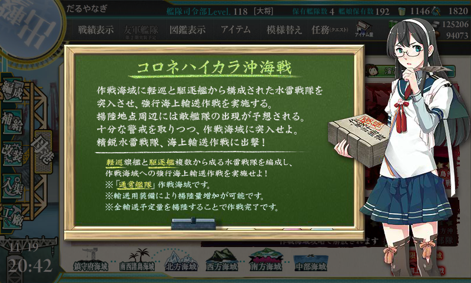
コロンバンガラ島沖海戦がモデルみたい。Wikipedia によると日本軍の参加艦艇は以下の通り（太字は艦これ実装艦）。
第二水雷戦隊部隊（二水戦部隊/警戒隊）
軽巡洋艦：「神通」
駆逐艦：「清波」、「雪風」、「浜風」、「夕暮」、「三日月」輸送隊
駆逐艦：「皐月」、「水無月」、「夕凪」、「松風」輸送隊は陸兵1,100名、物件約100トンを搭載
最初はこの艦隊だけで出撃したろうと思ったのだけど、
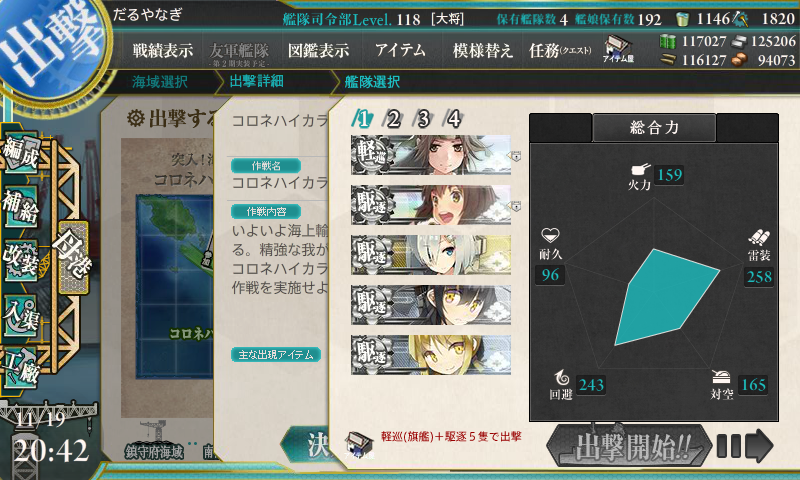
軽巡1、駆逐5にしろという。とりあえず「綾波」ちゃんと足しておいた。
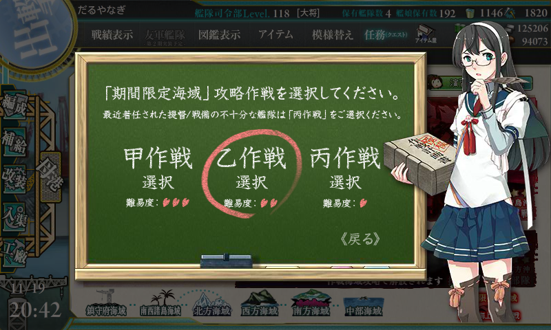
難易度は乙。調べたら報酬がしょぼかったので、ここはレベル下げてさっさとクリアする。
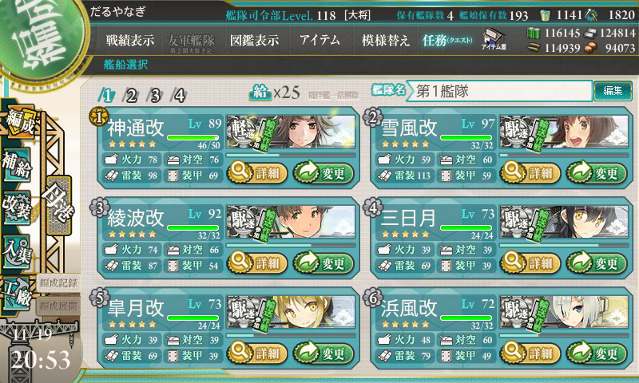
ちなみに、お札がつく。E3 以降どうなるんだろう……。
ルート＆出撃
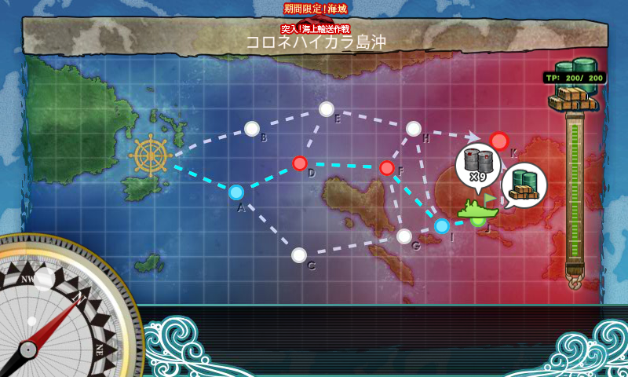
このマップは、
- J を通って物資を揚陸し、
- K（ボス）で A 勝利以上を得ることで、
- 積載貨物の量（装備しているドラム缶や大発×勝利ランク補正）によって輸送ポイント（TP）が得られる
というシステム。TP ゲージを破壊したら、マップクリアとなる（乙の場合は200）。
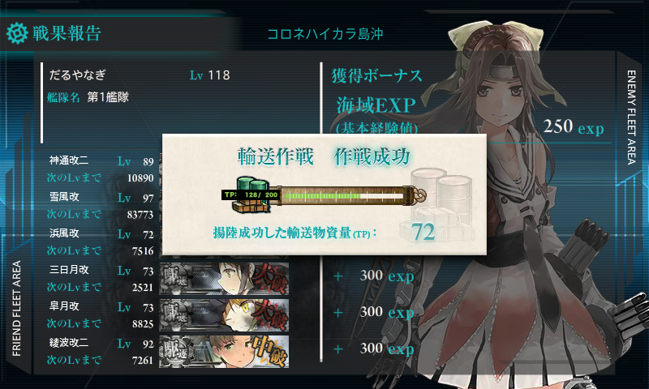
自分の場合、
- 神通：主砲×2、零観
- 雪風：魚雷×2、見張り員
- 綾波：主砲×2、照明弾
- 浜風：ドラム缶×3
- 三日月：ドラム缶×3
- 皐月：ドラム缶×3
にしてみた。これで J → K を外さなかったが、なんせ試行回数が少ないので、これでルート確定化と言われると自信はない。
「浜風」以下は戦闘に参加してもたいして貢献しないだろうので、ドラム缶要員に。これで S 勝利だと 72TP 稼げるので、3回ボス撃破でマップクリアとなる。
道中・決戦ともに最大限の支援付きで3回出撃でのクリアを目指すが――
- A → D → F → I → J → K：ボス撃破
- A → D：道中支援が来ず。「三日月」大破、撤退。
- A → D → F → I → J → K：ボス撃破
- A → D → F → I → J → K：ボス撃破
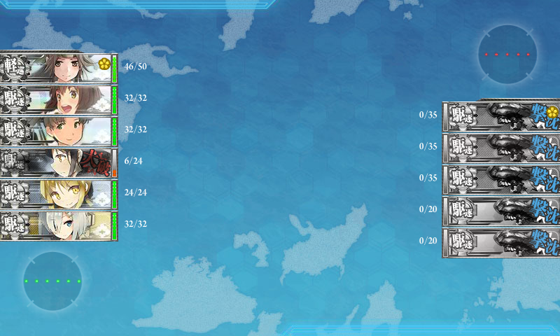
一度だけ徹底の憂き目に。
F の夜戦マスよりも、D の雷撃戦での事故の方が怖いイメージかも。
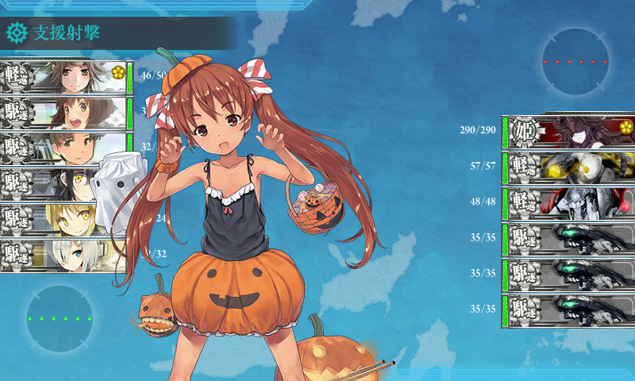
それにしても、こいつはほんまかわいい生き物だな。
報酬
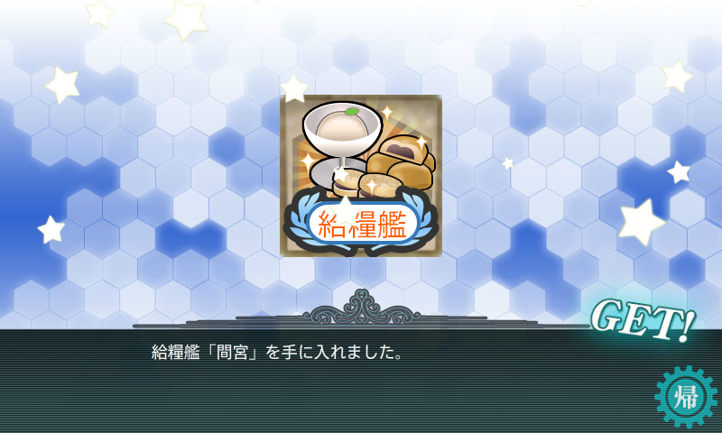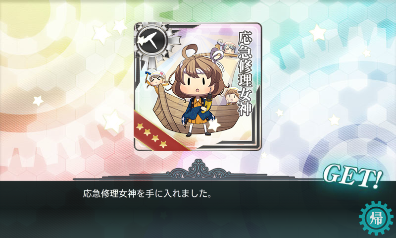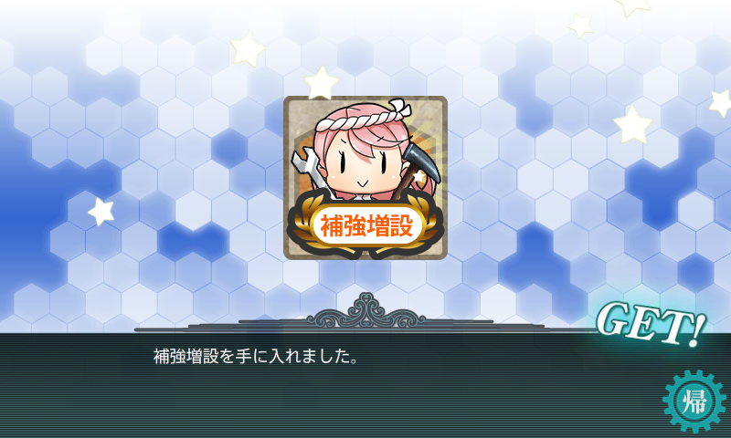
そして、ボス戦 S 勝利で「高波」をゲット。
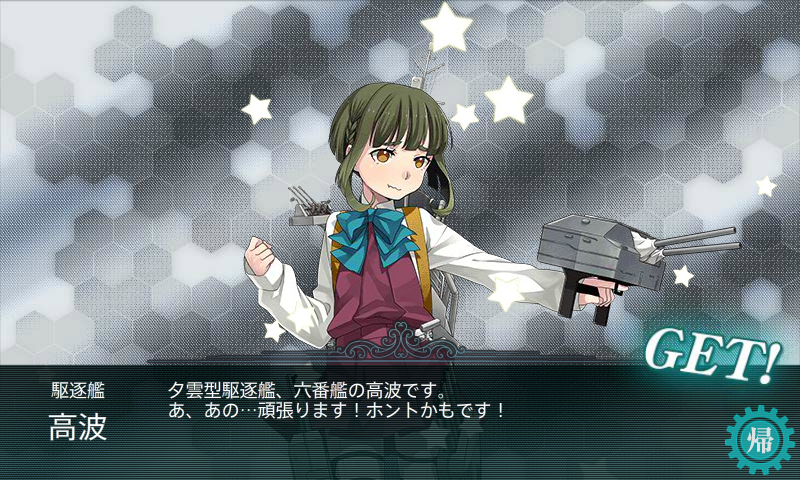
養殖すると「熟練見張員」「22号対水上電探」「13号対空電探」がもらえる美味しい艦娘。大事に育てようと思う。

支援が重かったので、燃料3000、弾薬4000、鋼材500、ボーキサイト200を消費。メンバーが固定なので、バケツも8個使った。
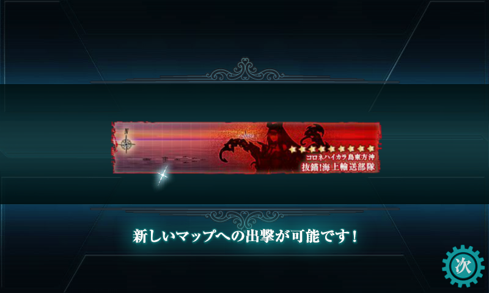